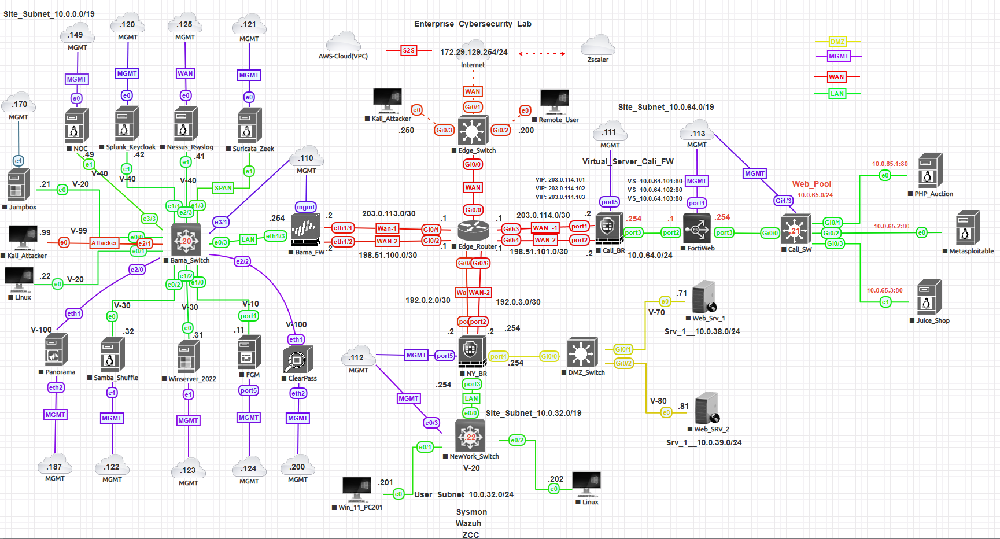

Multi-site enterprise security architecture integrating networking, firewall enforcement, identity services, telemetry, and detection engineering.
The Enterprise Cybersecurity Lab (ECL) is a multi-site enterprise security environment designed to simulate real-world network, security, and detection engineering operations. The architecture spans multiple locations and integrates routing, firewall enforcement, identity services, telemetry pipelines, and hybrid cloud connectivity into a unified platform.
The environment includes segmented network zones such as management, user, server, and DMZ networks. Traffic flows through Palo Alto firewalls where security policies, NAT, and inspection are enforced. Edge routing connects multiple sites and upstream providers, enabling realistic north-south traffic flow while maintaining internal segmentation for east-west control.
Security visibility is achieved through a centralized telemetry pipeline including Splunk, Sysmon, Suricata, Zeek, and Wazuh, providing full-stack observability across endpoints, servers, and network sensors. Identity-aware controls are implemented using Active Directory and ClearPass to support authentication, authorization, and network access enforcement.
The lab also includes attacker simulation and vulnerable systems to support detection engineering and SOC workflows, enabling validation of alerts, correlation, and response scenarios. Hybrid connectivity to external environments such as AWS and secure web gateways extends the architecture beyond a single site.
